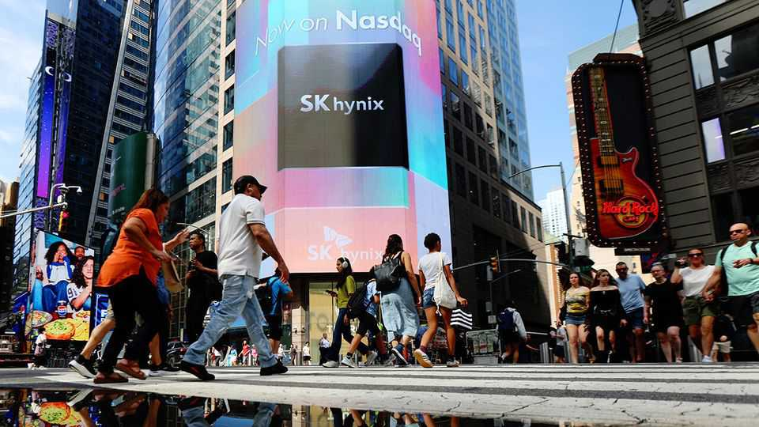
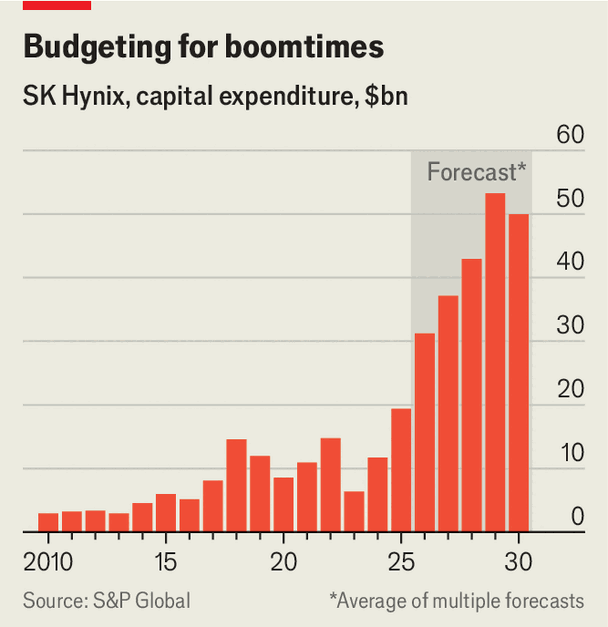

How SK Hynix became the king of advanced memory chips
Its advantages will not protect it if demand falters
July 16th 2026

In the early 2000s a sharp downturn in the market for memory chips pushed Hynix Semiconductor, as it was known at the time, to the brink of collapse. Sales fell by half, and the South Korean company’s market capitalisation sank to just above $500m. A decade of brutal restructuring ensued, during which it narrowly survived an effort by Micron, an American competitor, to buy it for parts. In 2012 the floundering chipmaker was acquired by SK Group, a local conglomerate.
These days things look very different for SK Hynix. In June it briefly dethroned Samsung Electronics as South Korea’s most valuable company. It is now neck-and-neck with its long-time rival in the global market for memory chips, and well ahead in the high-bandwidth memory (HBM) required for artificial intelligence.

The AI boom has fuelled a vertiginous rise in SK Hynix’s market capitalisation, which in May passed $1trn. On July 10th the company listed its shares on America’s Nasdaq exchange, raising $26.5bn in the process, a record for a foreign company. Although its share price slumped on the following trading day, with investors wary of the increasingly lofty valuations of chipmakers, it is still up by around 1,000% since the start of 2025. The money raised in the listing, along with the $50bn of cash its operations generated in the 12 months to March, will fund an ambitious expansion (see chart). “We’re going to double our whole capacity in the next five years,” Chey Tae-won, the chairman of SK Group, pledged last month. Appetite for its chips is voracious: sales in its most recent quarter were triple the level a year earlier.
SK Hynix cannot take credit for the AI boom. But its turnaround is remarkable nonetheless. The chipmaking industry’s intense capital requirements and technological sophistication favour incumbents. Underdogs rarely pull ahead. How has SK Hynix done it?
Part of the explanation lies in its nimbleness. Stuck in the shadow of Samsung, which controlled around 40% of the memory market (against Hynix’s roughly 25%) in the early 2010s, the runner-up started looking for ways to leapfrog the competition. Identifying novel ways to circumvent the physical limits of increasingly tiny chips became a focus, recalls Park Sung-wook, its chief executive in 2013-18. Opportunity struck in 2008 when AMD, an American company that itself played second fiddle to Intel, asked SK Hynix to create a new form of stacked memory chip for a graphics processor. The pair had previously worked together on an earlier graphics-memory chip that had proved a great success. Although the early trial of HBM, launched in 2013, proved too pricey for customers, it demonstrated that stacking memory chips vertically could achieve significantly faster speeds.
Missteps from rivals provided an added boost. In 2019 Samsung downsized its HBM team to invest in other types of chips. Engineers who still believed in the technology fled to SK Hynix. A crop of engineers from Intel, which was struggling with product delays, joined the South Korean memory-maker too.
Corporate culture has also played an important part. Samsung is known to reward internal competition through a cut-throat meritocracy. SK Hynix, on the other hand, embraces collaboration. Hyun Sun-yeop, its former human-resources chief, argues that company-wide practices such as frequent one-on-ones let employees speak out and share information, in contrast with Samsung’s more hierarchical and siloed environment.
Engineers are also encouraged to tinker, with unsuccessful projects turned into “failure case studies”. That has led to innovations such as “mass reflow-molded underfill”, which packages together stacked chips by filling gaps between them with a moulding liquid, helping to dissipate heat. Such techniques helped SK Hynix beat Samsung to market with HBM3, the fourth generation of the product, in 2022, making it the sole supplier of cutting-edge memory to Nvidia, the king of AI chips.
SK Hynix could still falter. It has never faced such a position, as a market leader during a period of relentless expansion. Samsung and Micron are catching up; both are set to supply some HBM for Nvidia’s upcoming Vera Rubin server rack, and Samsung has been regaining its lead in conventional memory. The three businesses, which together dominate the memory market, have all unveiled dizzying investment plans. Last month the two South Korean giants announced over $2trn of investment up to 2040, including in a “mega-cluster” of chip facilities in Yongin, a city near Seoul.
Soaring demand and fierce competition increase the risk of over-investment, a regular feature of boom periods in the notoriously cyclical memory market. At the peak of the last cycle, in 2018, SK Hynix’s capital expenditure hit $15bn (or 40% of revenue). Then in 2019 a slowing server market led to a halving of memory prices. The firm’s sales fell by 33% the following year, while steep fixed costs meant operating profits collapsed by 87%.
This time the company has promised to limit capital spending to about a third of revenue (over the past 12 months it has averaged 22%). It also insists that long-term supply agreements, negotiated on more stringent terms than in the past, give it years of visibility on sales. That may help the eventual down-cycle to “not be as violent”, says Jing Jie Yu of Morningstar, a research firm. But even if demand remains high relative to the past, any reduction could arrive just as the new capacity currently being built comes online. Bernstein, a broker, reckons that memory prices, which have risen nearly ten-fold in the past year, will probably peak next year, precipitating a 45% drop in sales at SK Hynix in 2028. Rising Chinese memory-makers such as CXMT and YMTC could add to the excess supply.
SK Hynix also faces growing demands from politicians. It is under pressure from Lee Jae Myung, South Korea’s president, to expand capacity in the country’s less-developed south-west, where SK Hynix recently announced over $260bn-worth of investments to create another chipmaking cluster. Although the region is abundant in water and power, executives are wary of moving too much capacity away from Seoul, where talent and industrial networks concentrate. America, too, is prodding. Howard Lutnick, its commerce secretary, is reportedly in talks with the chipmaker to build more in America. The firm has already committed to a $4bn facility in Indiana. SK Hynix is discovering that success brings challenges of its own. ■
To track the trends shaping commerce, industry and technology, sign up to “The Bottom Line”, our weekly subscriber-only newsletter on global business.